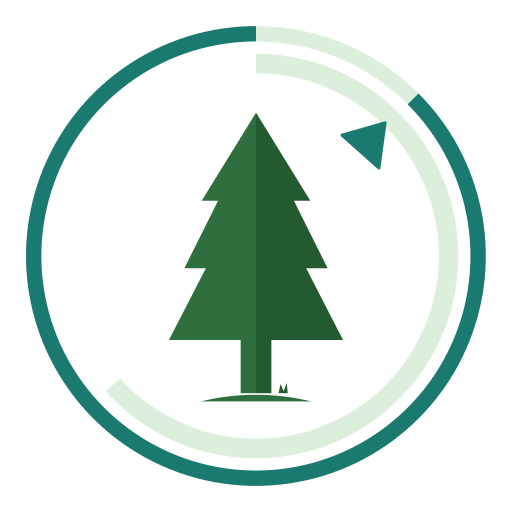
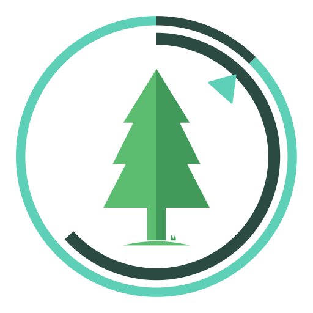

It’s okay. Try again next time.
Version 1.9
A calm focus timer that grows a forest from your time.
Forestland is a personal, offline focus timer for Windows. Start a session and a tree grows while you stay focused; finish it and the tree joins your forest, give up and it withers. Over time your forest becomes a picture of the hours you have put in.
Everything is stored on this PC in %APPDATA%\Forestland. Forestland never connects to the internet by itself. Sync happens only when you press Sync and only through a folder you choose, and you can export or import a backup at any time.
Python, pywebview (Microsoft Edge WebView2) and psutil on the desktop, with a plain HTML, CSS and JavaScript interface. All trees, lands and the Mindful Space pod were drawn by hand as vector art for Forestland.
Designed and owned by Dr. K. Alvi, vibe coded with the help of Claude (Anthropic).
Inspired by the Forest focus-timer concept. Forestland is an independent project, not affiliated with or endorsed by Seekrtech.
Start–end times include any pauses. The minutes shown are your true focus time.